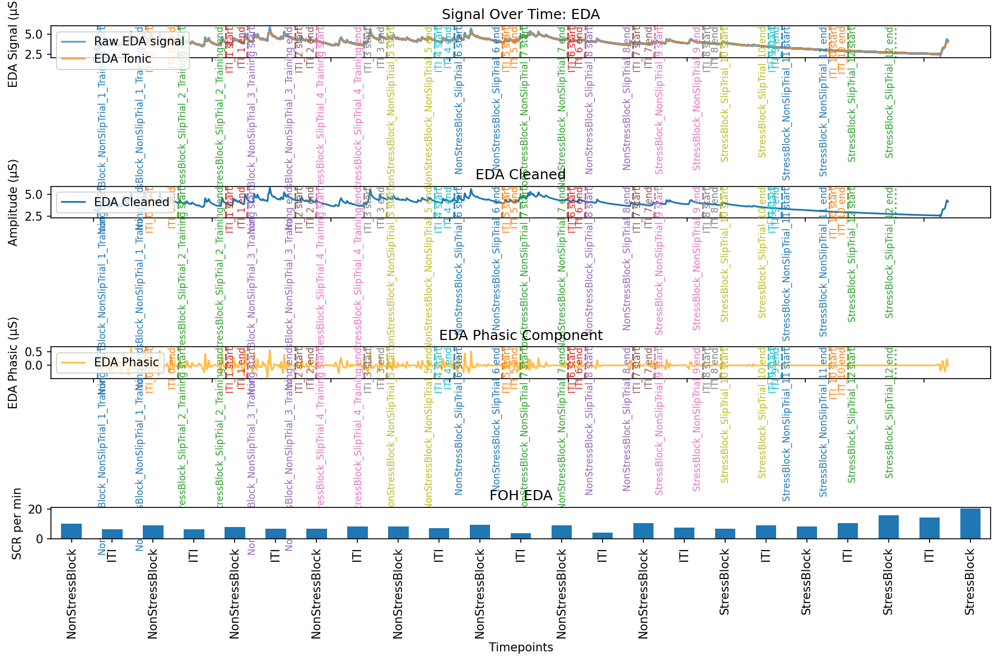

EDA & Skin Conductance Responses (SCRs)
This is step 3: once your data has been processed, check the QC plots it produced before you trust the numbers. This page covers EDA processing — relevant whichever experiment your data is from — and how to read its QC plot. FOH and Crane each also have their own extra check on top of this one: see FOH Output Checks and Crane Output Checks.
What is EDA, and what's an SCR?
EDA (electrodermal activity) is the electrical conductance of the skin, measured at the fingers or palm. It changes slightly as sweat glands activate — and sweat gland activity is controlled by the sympathetic nervous system, the same system involved in stress/arousal responses. In practice, EDA is used as a proxy for physiological arousal.
EDA has two components:
- Tonic — the slow-moving baseline level, drifting gradually over minutes.
- Phasic — fast, short-lived bumps on top of that baseline, each one a Skin Conductance Response (SCR). These are "the little bumps": brief spikes triggered by a specific, arousing event (a stressor, a startling moment, a stimulus in a task).
This pipeline counts SCRs per trial interval, as SCRs per minute — more SCRs per minute suggests more arousal during that interval.
Going further
For a fuller (but still accessible) introduction to EDA and SCRs, see: Electrodermal activity - a beginner's guide, available on ResearchGate: https://www.researchgate.net/publication/346496084_Electrodermal_activity_-_a_beginner%27s_guide (see that page for full authorship and publication details).
How a signal turns into a number
In plain terms, for each trial interval:
- The raw signal for that interval is cut out of the full recording.
- It's cleaned (noise removed), then split into its tonic and phasic components.
- SCRs are detected in the phasic component and counted, then divided
by the interval's length in minutes — that's the
SCRs per minutevalue that ends up in your output file for that trial.
The QC plot below is produced separately, over the whole recording at once, purely so you can see this process working correctly — it doesn't feed into the numeric output itself.
Going further
For the actual function/class names behind each of these steps, see Code Organization in For Contributors.
Example QC plot

| Row | Title | What it shows |
|---|---|---|
| 1 | Signal Over Time: EDA | Raw EDA signal, with the tonic (slow baseline) component overlaid. Vertical dashed/dotted lines mark each trial interval's start/end, from the interval-matching step. |
| 2 | EDA Cleaned | The signal after noise removal. |
| 3 | EDA Phasic Component | The fast-moving phasic component, split out from the cleaned signal — this is where individual SCRs (the bumps) are visible and detected. |
| 4 | (bar chart) | One bar per trial interval: the final SCR_per_min value that row 3 turns into. |
Going further
The bottom row's title reads "FOH EDA" even in this Crane example —
that's a leftover label from when this plotting code was shared across
experiments, not a sign anything's actually wrong with the data. Worth
fixing in plot_eda (eda.py) at some point, but harmless for now.
When trial intervals couldn't be matched
Same idea as the Interval QC Plot's fallback behaviour: if labelled trial intervals aren't available for a participant, this step still runs, using raw, unlabelled trigger intervals straight from the physiology data instead of giving up — the same "partial data beats no data" idea used throughout this pipeline.
The NeuroKit2 toolbox
All the actual signal-processing math (cleaning, tonic/phasic decomposition, peak detection) is done by NeuroKit2, an established, published open-source toolbox for physiological signal processing — not something custom-built for this project.
Going further
Makowski, D., Pham, T., Lau, Z. J., Brammer, J. C., Lespinasse, F., Pham, H., Schölzel, C., & S, H. A. C. (2021). NeuroKit2: A Python toolbox for neurophysiological signal processing. Behavior Research Methods, 53(4), 1689–1696. https://doi.org/10.3758/s13428-020-01516-y
Next: FOH Output Checks — the extra thing to check if your data is from FOH.